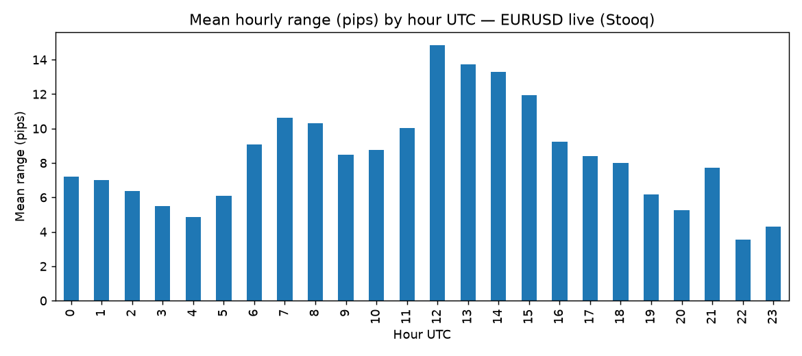
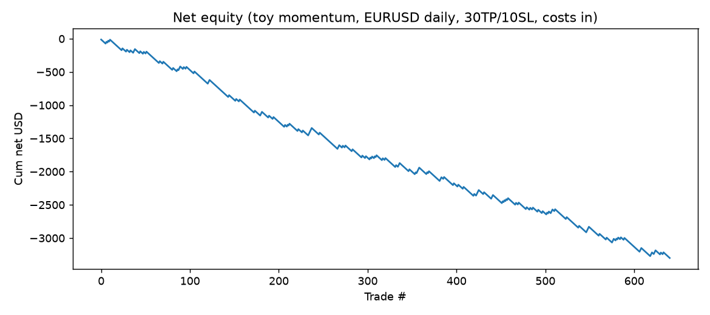

This repo turns a complete 7-video beginner forex course (what trading is, how the market works, candles, orders, pips, brokers, leverage, risk) into 8 checkable claims and replays them on real 2021–2026 price data with a strict no-peeking backtest. Everything regenerates with one command.
Run it in 5 minutes Start: beginner guide Watch the 60-second demo
Live close used: EURUSD 1.12574577 (2026-10-02) · Hourly sample: EURUSD 1,570 bars · Daily: 1,301 bars/pair (2021-10-03 → 2026-10-02) · Data: Yahoo + Frankfurter + ECB, manifests per file.
You will know more than most interview candidates after these 10 ideas. Each is one sentence, then one example with the real verified numbers from this repo.
docker compose up --build research or make verify. Seed 7, UTC everywhere.| As a… | I want to… | So I use… |
|---|---|---|
| Complete beginner | understand forex in one evening without jargon | §Beginner guide + preview.html + Glossary. Acceptance: can explain pips, lots, SL/TP to a friend. |
| Course student | check each video lesson against real markets | Hypothesis table §Results + results/benchmark.json. Acceptance: can quote overlap 1.92× and NFP 1.27×. |
| Demo trader | practice sizing before risking money | Quickstart sizing lab (§Quickstart step 3). Acceptance: sets 1% risk / 3% target on a demo account. |
| Strategy tinkerer | test my own signal without peeking | src/backtest.py:backtest_market_orders — replace signals, keep the engine. Acceptance: gross-vs-net + Monte Carlo printed. |
| Risk manager | prove 30% wins can still profit | H6 expectancy + §Risks. Acceptance: reproduces +0.20R/trade and ruin intuition. |
| Teacher / mentor | show a class why costs kill scalps | H5 table + equity figure. Acceptance: students cite $1,410 drag on 641 trades. |
| Researcher (PhD track) | extend to walk-forward + tick spreads + surprises | §Roadmap + config/experiments.yaml. Acceptance: stitched-OOS curve + Universal ≥3/5 pairs. |
| Open-source maintainer | publish a reproducible MIT repo | Docker + manifests + seed 7 + this page. Acceptance: fresh clone reproduces 8/8. |
git clone <your-fork-url> forex-foundations-verification-2026 cd forex-foundations-verification-2026 docker compose up --build research # without docker: make verify # fetch → benchmark → tests; see results/benchmark.json
Account $1,000 · risk 1% = $10 · SL 10 pips on 0.10 lot ($1/pip) → risk exactly $10 TP 30 pips → reward $30 (3R). Win 3 of 10 → +$90 − $70 = +$20 (+2R). Verified: H6.
| # | Lesson | Live result (2026-10-04 run) | Gate |
|---|---|---|---|
| H1 | Market is huge, USD + London dominate | BIS Apr-2025 $9.6tn/day (+28% vs $7.5tn 2022) | CORROBORATED |
| H2 | 0.01→$0.10 · 0.10→$1 · 1.00→$10 per pip | 0.10 / 1.00 / 10.00 @1.12574577 | PASS |
| H3 | London–NY overlap strongest | Overlap 12.619 vs Asia 6.584 (×1.917), n=1,570 | PASS |
| H4 | Candles aggregate exactly | 1301 daily → 262 weekly; σ=0.004741; mean range 67.88 | PASS |
| H5 | Costs decide scalps | 641 trades: −$1,890 → −$3,300.20 (drag $1,410.20); win 17.63%; PF 0.488 | PASS |
| H6 | 30% × 3:1 still nets +2R/10 | E=+0.20R/trade → +2R/10 | PASS |
| H7 | Leverage = locked margin | 1.0 lot @100× → margin $1,125.75; 100 pips = −$1,000 | PASS |
| H8 | NFP Fridays are wider | 85.79 vs 67.51 (×1.271, p=0.0074) | PASS |

Peak hours 12 (14.85), 13 (13.75), 14 (13.29); quiet 22 (3.56), 23 (4.31), 04 (4.87).

Honest losing baseline net of costs — the engine works; naive entries do not.
Watch: the animation below replays exactly what the engine does — signal at close → fill next open → TP/SL race with SL-first pessimism → costs deducted. Open preview.html in a browser for the animated version.
GitHub READMEs play GIFs inline (videos need a click-through). Use the files below:
. Keep under ~8 MB.docs/SCREENSHOTS.md.Open demo.gifScreenshot: desktopScreenshot: mobile
close[t] decides → open[t+1] fills (never today's close) same bar hits TP+SL → counts as SL (pessimistic) net = gross − spread·value − commission − swap one trade at a time · 48-bar timeout · 5,000 order-shuffles for luck-check
Files: src/backtest.py:backtest_market_orders, src/fx_math.py (pip/lot/margin/expectancy), src/data_fetch.py (Yahoo + Frankfurter + ECB, manifests), experiments/09_full_benchmark.py (the one pipeline that writes results/benchmark.json).
. ├── preview.html # this page (open in browser) ├── README.md # full paper + guide (start here on GitHub) ├── PAPER.md # 2-page submission cover ├── docker-compose.yml # research (default) + notebook (profile: lab) ├── src/ experiments/ tests/ config/ docs/ scripts/ ├── data/ # CSVs + .manifest.json (rows/sha/URL/time) ├── results/benchmark.json # canonical numbers quoted everywhere └── assets/demo.gif + docs/screenshots/ # visuals for the README
Do I need money or an account? No. Everything runs on free public data. Use a demo account if you practice orders.
Which session should a beginner watch first? 12:00–17:00 UTC. It moved 1.92× more than Asia in our sample.
Why did the example strategy lose? It was intentionally naive (5-day momentum, tight 30/10). It proves costs ($1,410 on 641 trades) and the need for a real edge + walk-forward validation.
Is leverage free money? No. It locks margin ($1,125.75 per 1.0 lot @100× here) and multiplies losses equally (100 pips = −$1,000). Overnight swap is separate — demand swap-free terms in writing if relevant.
Can I trust one backtest? No. Require walk-forward out-of-sample, cross-pair generality (≥3/5 pairs), spread shocks, and 30–50 forward trades before judging.
How do I make my own strategy? Replace signals in 09_full_benchmark.py, keep the engine, run make verify.
MIT — see LICENSE. Data: Yahoo Finance / Frankfurter (ECB) / ECB; respect their terms. BIS statistics cited for market size.